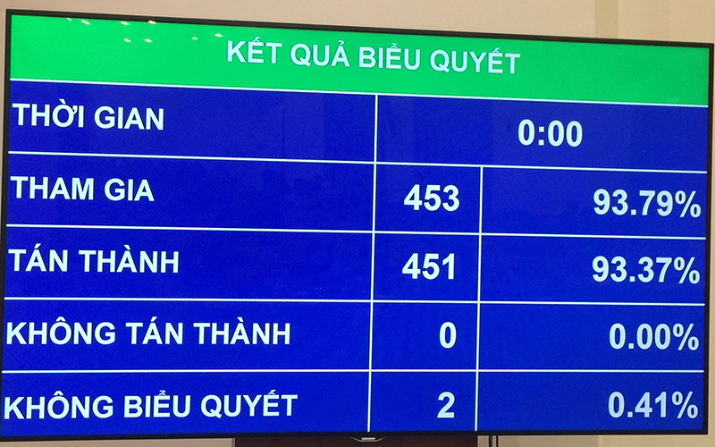

Quốc hội thông qua nghị quyết về dự toán ngân sách nhà nước năm 2020
Thứ Ba, 12/11/2019, 14:22:44
NDĐT- Chiều 12-11, với 93,37% đại biểu Quốc hội biểu quyết tán thành, Quốc hội chính thức thông qua Nghị quyết về Dự toán ngân sách nhà nước năm 2020. Theo đó, Quốc hội đồng ý với tổng mức vay của ngân sách nhà nước năm 2020 là gần 489 nghìn tỷ đồng và giao Chính phủ thực hiện tăng lương cơ sở từ 1,49 triệu lên 1,6 triệu đồng/tháng kể từ ngày 1-7-2020.
Đoàn đại biểu Quốc hội TP Hải Phòng tham gia biểu quyết, chiều 12-11.
Mở đầu phiên làm việc, Quốc hội nghe Chủ nhiệm Ủy ban Tài chính-Ngân sách của Quốc hội Nguyễn Đức Hải trình bày báo cáo tiếp thu, giải trình về đánh giá tình hình thực hiện ngân sách nhà nước năm 2019, dự toán ngân sách nhà nước năm 2020 và Dự thảo Nghị quyết về dự toán ngân sách nhà nước năm 2020.
Tiếp theo, Quốc hội tiến hành biểu quyết bằng hệ thống điện tử. Kết quả biểu quyết có 451/453 đại biểu Quốc hội tán thành, chiếm 93,37% trên tổng số đại biểu Quốc hội. Như vậy, Quốc hội đã chính thức thông qua Nghị quyết về Dự toán ngân sách nhà nước năm 2020.
Theo dự toán ngân sách nhà nước năm 2020 mới được Quốc hội thông qua, tổng số thu ngân sách nhà nước là 1.512.300.000 triệu đồng (một tỷ, năm trăm mười hai triệu, ba trăm nghìn triệu đồng).
Tổng số chi ngân sách nhà nước là 1.747.100.000 triệu đồng (một tỷ, bảy trăm bốn mươi bảy triệu, một trăm nghìn triệu đồng).
Mức bội chi ngân sách nhà nước là 234.800.000 triệu đồng (hai trăm ba mươi bốn triệu, tám trăm nghìn triệu đồng), tương đương 3,44% tổng sản phẩm trong nước (GDP).
Trong đó, bội chi ngân sách trung ương là 217.800.000 triệu đồng (hai trăm mười bảy triệu, tám trăm nghìn triệu đồng), tương đương 3,2%GDP; bội chi ngân sách địa phương là 17.000.000 triệu đồng (mười bảy triệu triệu đồng), tương đương 0,24%GDP.
Tổng mức vay của ngân sách nhà nước là 488.921.352 triệu đồng (bốn trăm tám mươi tám triệu, chín trăm hai mươi mốt nghìn, ba trăm năm mươi hai triệu đồng)
Kết quả biểu quyết về dự toán ngân sách nhà nước năm 2020 của Quốc hội.
Bên cạnh đó, Quốc hội cũng đồng ý với việc điều chỉnh, bổ sung kế hoạch đầu tư công trung hạn giai đoạn 2016-2020 và dự toán ngân sách nhà nước năm 2019.
Cụ thể, Quốc hội đồng ý điều chỉnh cơ cấu vốn thuộc kế hoạch đầu tư công trung hạn giai đoạn 2016-2020 của hai Chương trình mục tiêu quốc gia, trong đó, tăng vốn ngoài nước và giảm vốn trong nước tương ứng là 3.580.200 triệu đồng.
Bổ sung 241.021 triệu đồng cho các dự án thuộc Chương trình mục tiêu quốc gia Giảm nghèo bền vững giai đoạn 2016-2020 vào kế hoạch đầu tư công trung hạn giai đoạn 2016-2020 và bố trí số vốn tương ứng trong dự toán chi đầu tư phát triển nguồn ngân sách trung ương năm 2020 để thu hồi vốn ứng trước.
Hòa chung số vốn 4.069.000 triệu đồng còn lại chưa phân bổ trong tổng số 10.000 tỷ đồng từ nguồn điều chỉnh giảm nguồn vốn dự kiến bố trí cho các dự án quan trọng quốc gia của Kế hoạch đầu tư công trung hạn giai đoạn 2016-2020 với nguồn dự phòng chung của Kế hoạch Đầu tư công trung hạn giai đoạn 2016-2020. Giao Chính phủ thực hiện theo đúng quy định tại Nghị quyết số 84/2019/QH14 ngày 14-6-2019 của Quốc hội.
Bổ sung 77.490 triệu đồng từ nguồn viện trợ của Chính phủ Cộng hòa Ireland cho các tỉnh: Hà Giang: 18.000 triệu đồng; Hòa Bình: 20.900 triệu đồng; Quảng Trị: 9.490 triệu đồng; Kon Tum: 19.200 triệu đồng và Trà Vinh: 9.900 triệu đồng để đầu tư cho Dự án hỗ trợ các xã đặc biệt khó khăn thuộc Chương trình 135.
Bổ sung 36.611 triệu đồng từ nguồn viện trợ của Chính phủ Vương quốc Bỉ cho Dự án quản lý tổng hợp nguồn nước và phát triển đô thị trong mối liên hệ với biến đổi khí hậu tại tỉnh Hà Tĩnh.
Bổ sung 5.042 triệu đồng (225.000USD) từ nguồn viện trợ của Nhà nước Kuwait cho hai tỉnh: Hà Tĩnh 2.801 triệu đồng (125.000USD) và Quảng Bình 2.241 triệu đồng (100.000USD) để khắc phục hậu quả thiên tai.
Nghị quyết mới thông qua của Quốc hội cũng giao Chính phủ thực hiện một số biện pháp điều hành nhiệm vụ tài chính - ngân sách năm 2020. Trong đó, Quốc hội đồng ý với việc giao Chính phủ thực hiện điều chỉnh mức lương cơ sở từ 1,49 triệu đồng/tháng lên 1,6 triệu đồng/tháng từ ngày 1-7-2020. Đồng thời, Nghị quyết cũng quy định về việc giám sát và kiểm toán việc thực hiện dự toán ngân sách nhà nước năm 2020.